Ogni contributo verifica fonti primarie e indica cosa cambia per il destinatario. Mai marketing, mai pareri travestiti.
Vivere in una via trafficata non significa rinunciare alla tutela contro i rumori. Un orientamento giurisprudenziale consolidato chiarisce che il locale commerciale risponde delle …
Una recente pronuncia della Corte di Cassazione interviene sui rapporti di rivalsa tra compagnie assicurative nei sinistri con pluralità di responsabili. La decisione distingue tra…
Il pignoramento dello stipendio non azzera la busta paga: la legge fissa quote massime trattenibili, variabili a seconda del creditore e del reddito. Capire come si calcolano le qu…
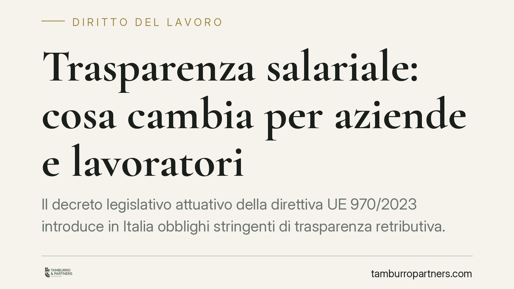
Il decreto legislativo attuativo della direttiva UE 970/2023 introduce in Italia obblighi stringenti di trasparenza retributiva. Le aziende dovranno comunicare i livelli di paga gi…
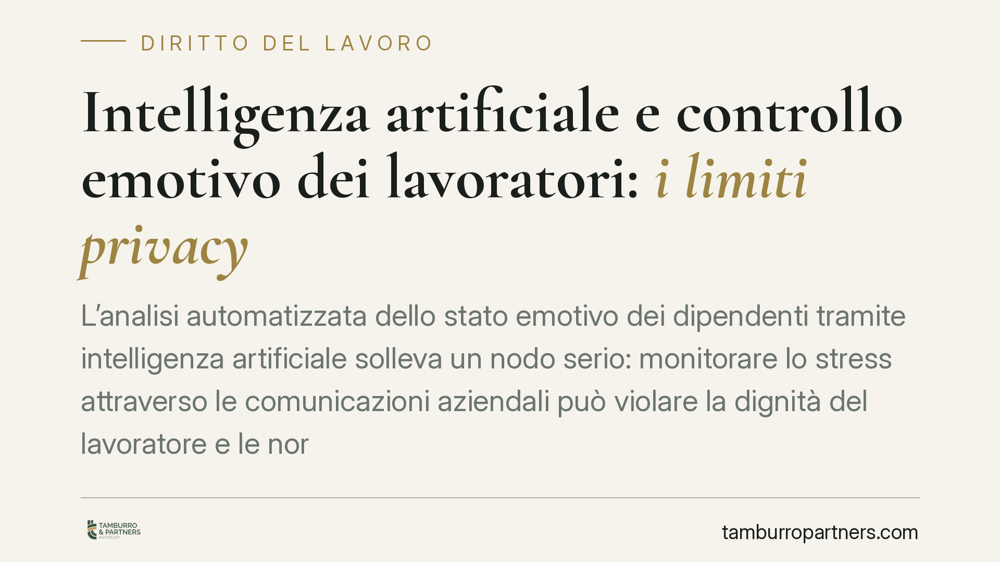
L'analisi automatizzata dello stato emotivo dei dipendenti tramite intelligenza artificiale solleva un nodo serio: monitorare lo stress attraverso le comunicazioni aziendali può vi…
La Cassazione torna a occuparsi di disservizi turistici: alloggi non conformi e voli in ritardo possono generare un obbligo risarcitorio. La materia, però, va letta con precisione:…
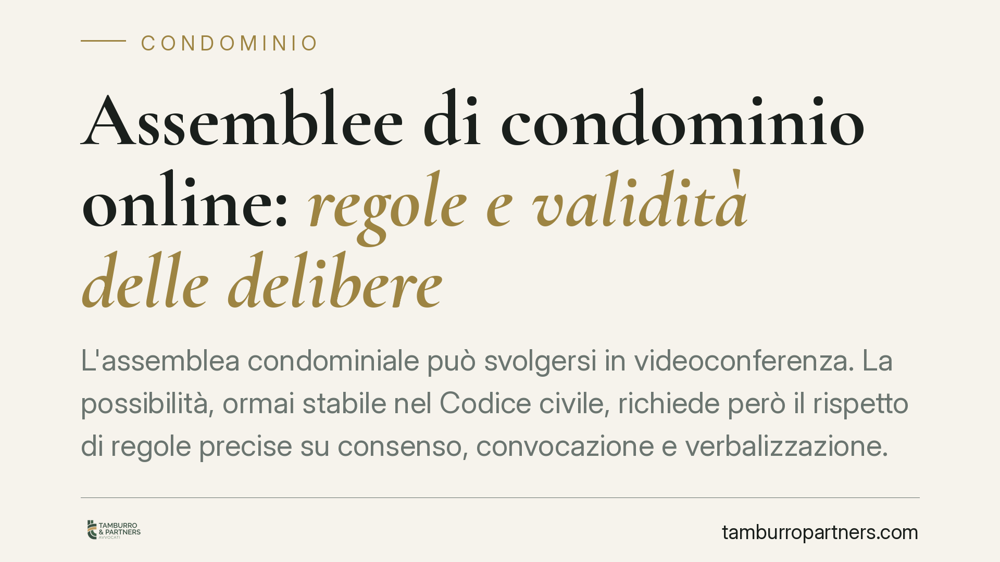
L'assemblea condominiale può svolgersi in videoconferenza. La possibilità, ormai stabile nel Codice civile, richiede però il rispetto di regole precise su consenso, convocazione e …
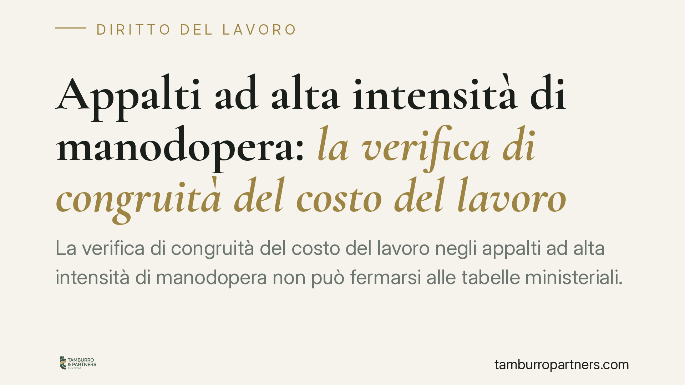
La verifica di congruità del costo del lavoro negli appalti ad alta intensità di manodopera non può fermarsi alle tabelle ministeriali. Secondo un consolidato orientamento del Cons…
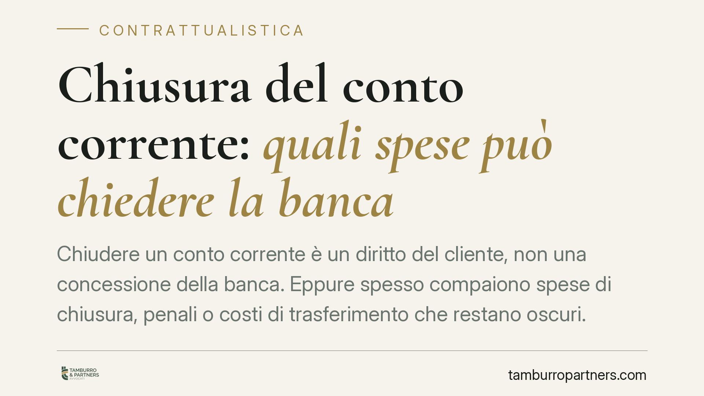
Chiudere un conto corrente è un diritto del cliente, non una concessione della banca. Eppure spesso compaiono spese di chiusura, penali o costi di trasferimento che restano oscuri.…
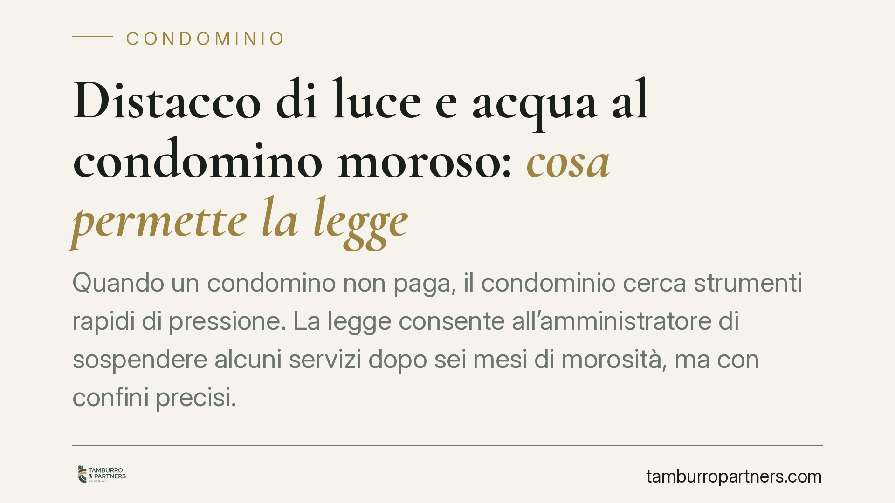
Quando un condomino non paga, il condominio cerca strumenti rapidi di pressione. La legge consente all'amministratore di sospendere alcuni servizi dopo sei mesi di morosità, ma con…
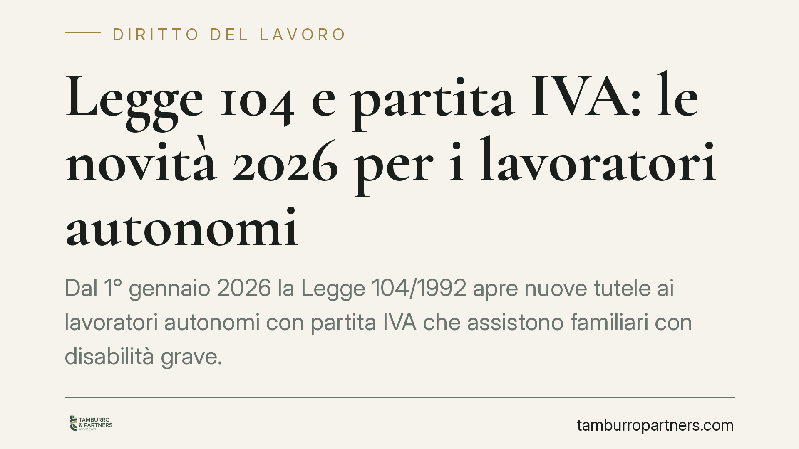
Si discute da mesi di un'apertura della Legge 104/1992 ai lavoratori autonomi con partita IVA che assistono familiari con disabilità grave. Allo stato, però, non esiste un testo at…
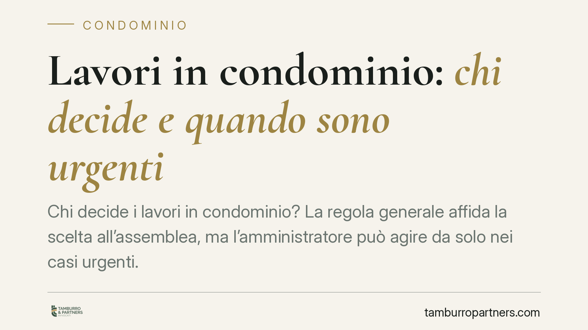
Chi decide i lavori in condominio? La regola generale affida la scelta all'assemblea, ma l'amministratore può agire da solo nei casi urgenti. Distinguere tra manutenzione ordinaria…
Diverse pronunce di merito del 2026 tornano sul nodo della mediazione obbligatoria nelle controversie condominiali. Il messaggio è netto: non basta presentarsi al primo incontro pe…
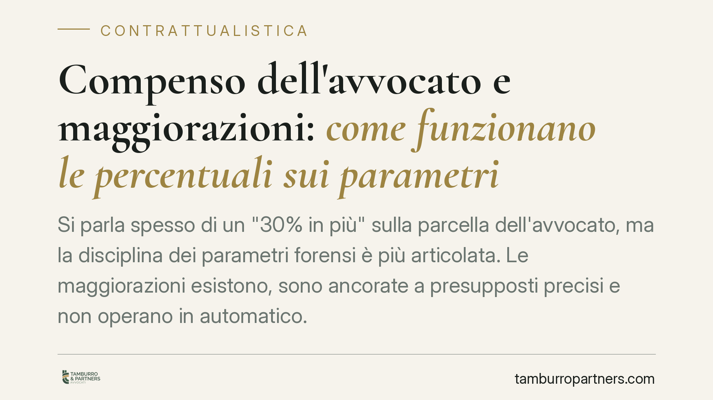
Si parla spesso di un "30% in più" sulla parcella dell'avvocato, ma la disciplina dei parametri forensi è più articolata. Le maggiorazioni esistono, sono ancorate a presupposti pre…
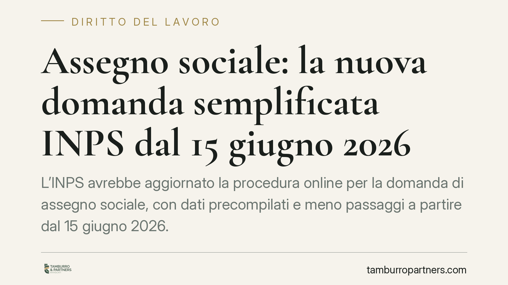
L'INPS avrebbe aggiornato la procedura online per la domanda di assegno sociale, con dati precompilati e meno passaggi a partire dal 15 giugno 2026. La novità riguarda la forma, no…
Un giudice del lavoro ha ritenuto eccessivo il licenziamento di una dipendente che aveva sputato in faccia a un collega. La condotta resta censurabile, ma la sanzione espulsiva è a…
Per la prima volta in Italia un contratto collettivo nazionale dedica una sezione specifica all'intelligenza artificiale. Il CCNL Funzioni Centrali 2025-2027, sottoscritto in sede …
Ogni condomino può consultare il regolamento, i contratti e i documenti di spesa gestiti dall'amministratore. Si tratta di un diritto fondato sulla trasparenza della gestione, che …
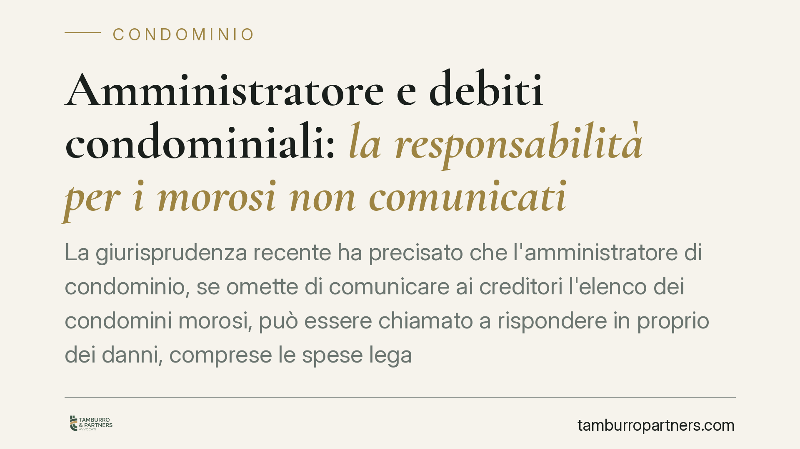
La giurisprudenza recente ha precisato che l'amministratore di condominio, se omette di comunicare ai creditori l'elenco dei condomini morosi, può essere chiamato a rispondere in p…
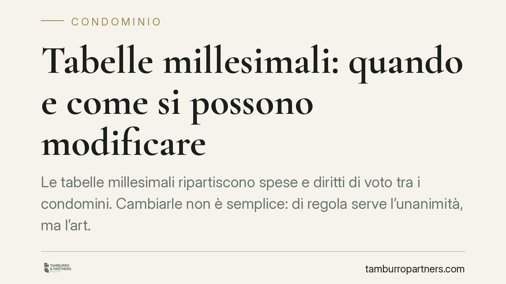
Le tabelle millesimali ripartiscono spese e diritti di voto tra i condomini. Cambiarle non è semplice: di regola serve l'unanimità, ma l'art. 69 delle disposizioni di attuazione de…
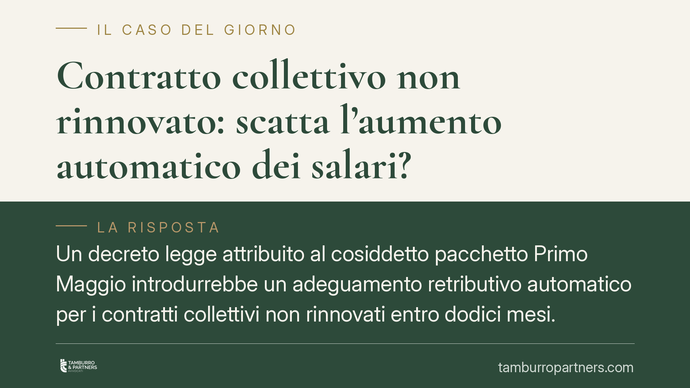
Un decreto legge attribuito al cosiddetto pacchetto Primo Maggio introdurrebbe un adeguamento retributivo automatico per i contratti collettivi non rinnovati entro dodici mesi. Il …
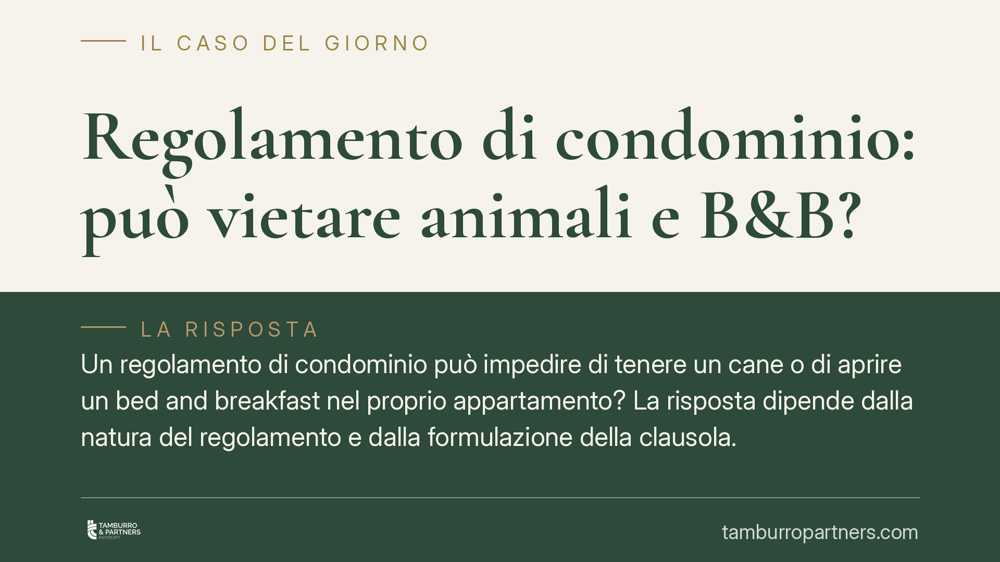
Un regolamento di condominio può impedire di tenere un cane o di aprire un bed and breakfast nel proprio appartamento? La risposta dipende dalla natura del regolamento e dalla form…
Un'intesa tra banche, prestatori di servizi di pagamento e associazioni di categoria prevede di eliminare le commissioni sui pagamenti POS fino a 10 euro e ridurle sotto i 30. Non …
Il distacco non recide il legame con l'azienda di origine: il rapporto di lavoro resta in capo al distaccante. Questo principio incide direttamente sull'accesso alla Cassa integraz…
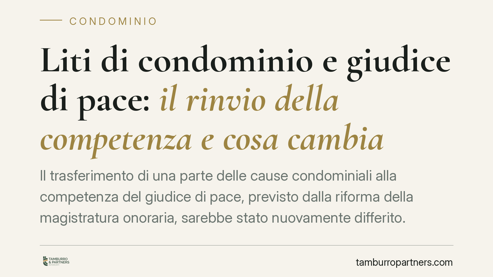
Il trasferimento di una parte delle cause condominiali alla competenza del giudice di pace, previsto dalla riforma della magistratura onoraria, sarebbe stato nuovamente differito. …
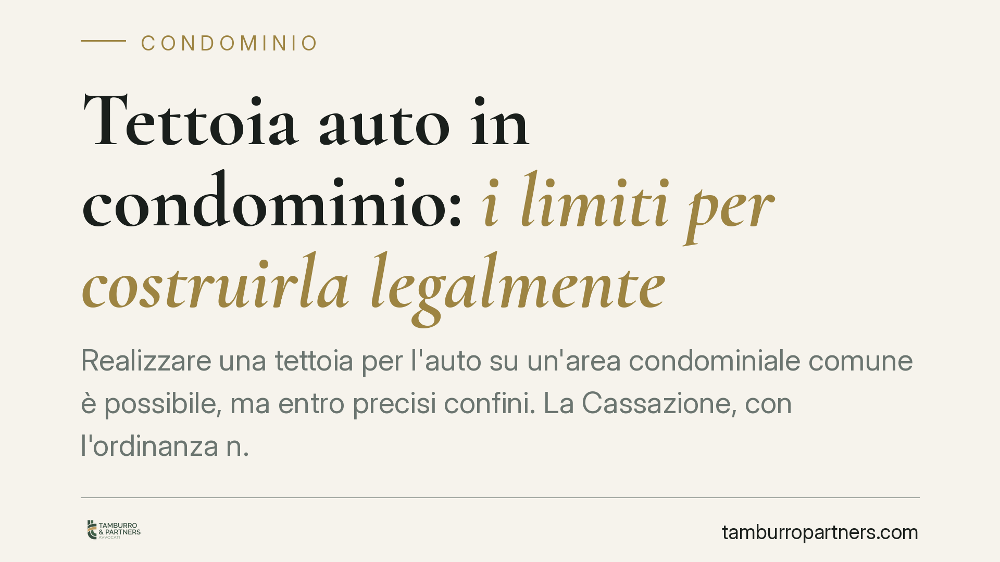
Realizzare una tettoia per l'auto su un'area condominiale comune è possibile, ma entro precisi confini. La Cassazione, con l'ordinanza n. 7870 del 2021, ha ribadito i parametri che…
Quando l'azienda fallisce o risulta insolvente, il lavoratore rischia di non vedere TFR e ultime retribuzioni. Interviene allora il Fondo di garanzia INPS. Una recente pronuncia de…
Una recente pronuncia del Tribunale di Avellino ribadisce un principio spesso ignorato in assemblea: quando un tetto copre solo una porzione dell'edificio, le relative spese gravan…
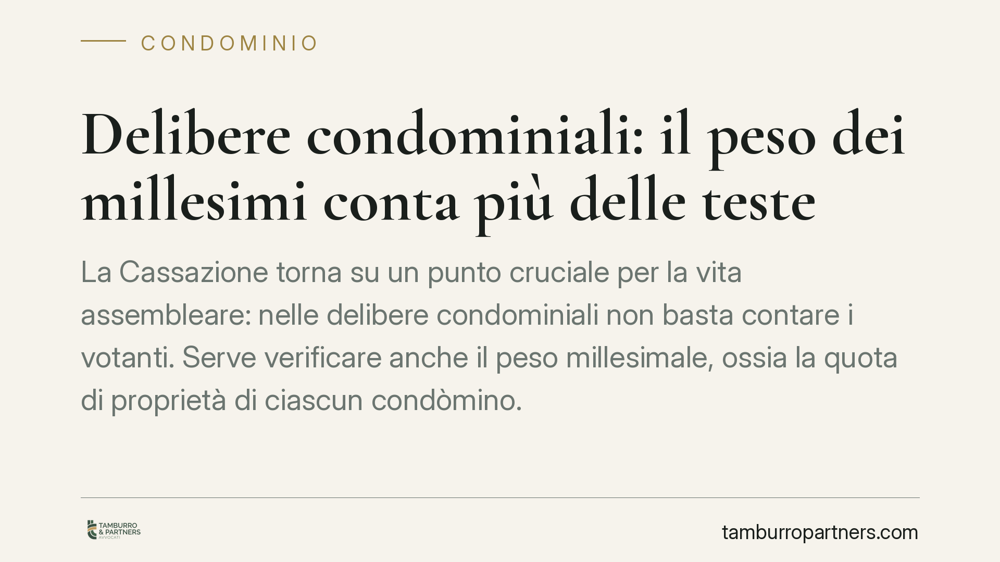
La Cassazione torna su un punto cruciale per la vita assembleare: nelle delibere condominiali non basta contare i votanti. Serve verificare anche il peso millesimale, ossia la quot…
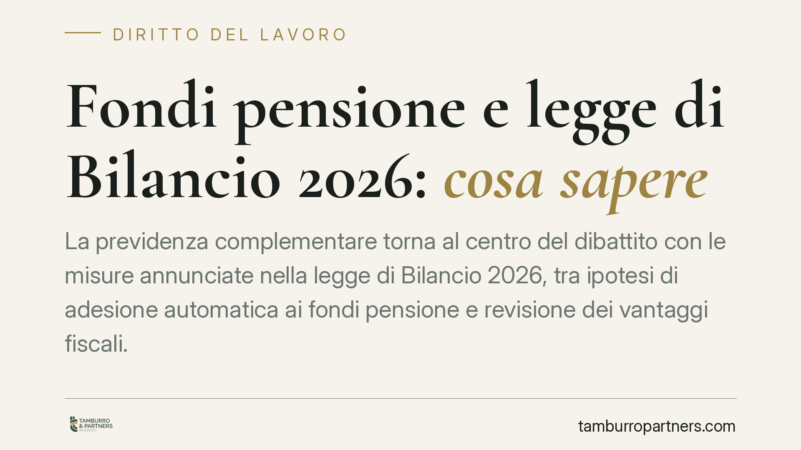
La previdenza complementare torna al centro del dibattito con le misure annunciate nella legge di Bilancio 2026, tra ipotesi di adesione automatica ai fondi pensione e revisione de…